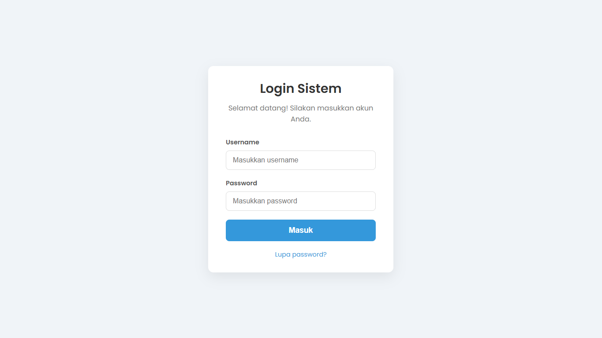

Template Halaman Login
Tentang Template Ini
Ini adalah template halaman login yang esensial untuk sistem informasi. Didesain agar bersih, modern, dan minimalis. Fokus utama template ini adalah menempatkan form login tepat di tengah layar (vertikal dan horizontal) dan responsif di semua ukuran perangkat.
Fitur Utama:
- Layout di Tengah (Vertikal & Horizontal)
- Sepenuhnya Responsif (Desktop & Mobile)
- Desain Bersih & Modern
- Efek 'Focus' yang Jelas pada Input
- Struktur HTML semantik
- Kode CSS yang Mudah Dimodifikasi dan Terorganisir
Teknologi yang Digunakan:
- HTML5
- CSS3 (Termasuk Flexbox untuk layout)
- Google Fonts (Poppins)